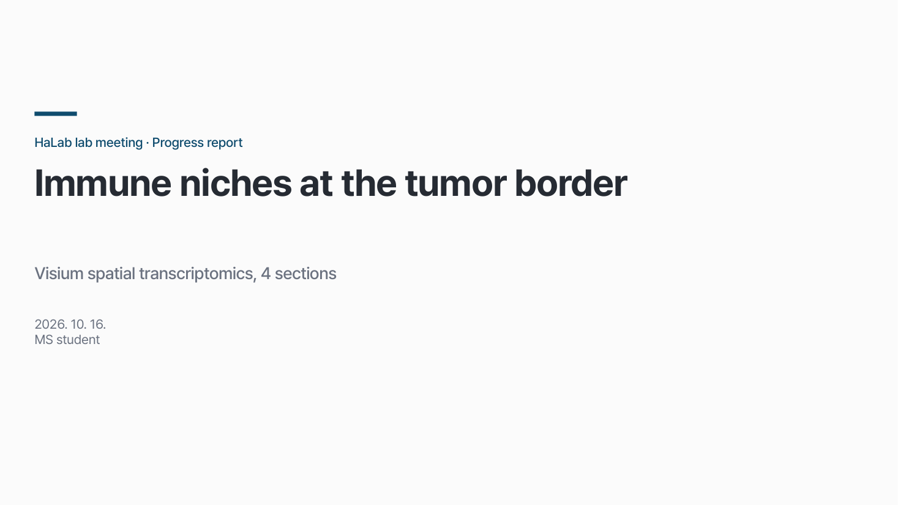
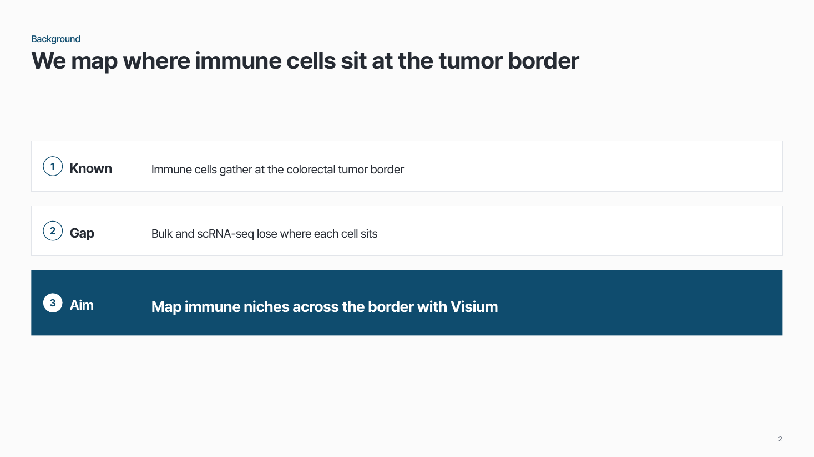
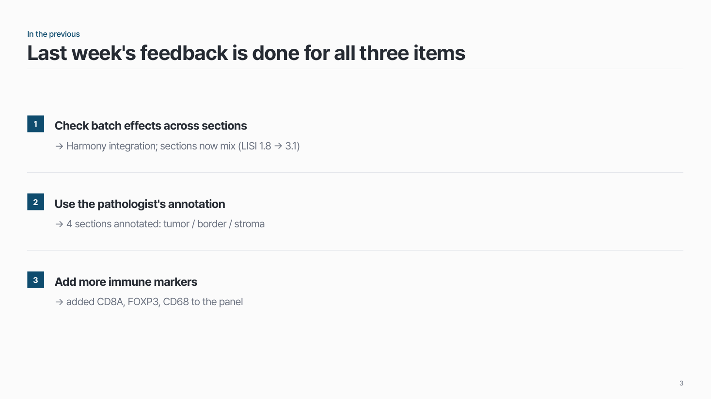
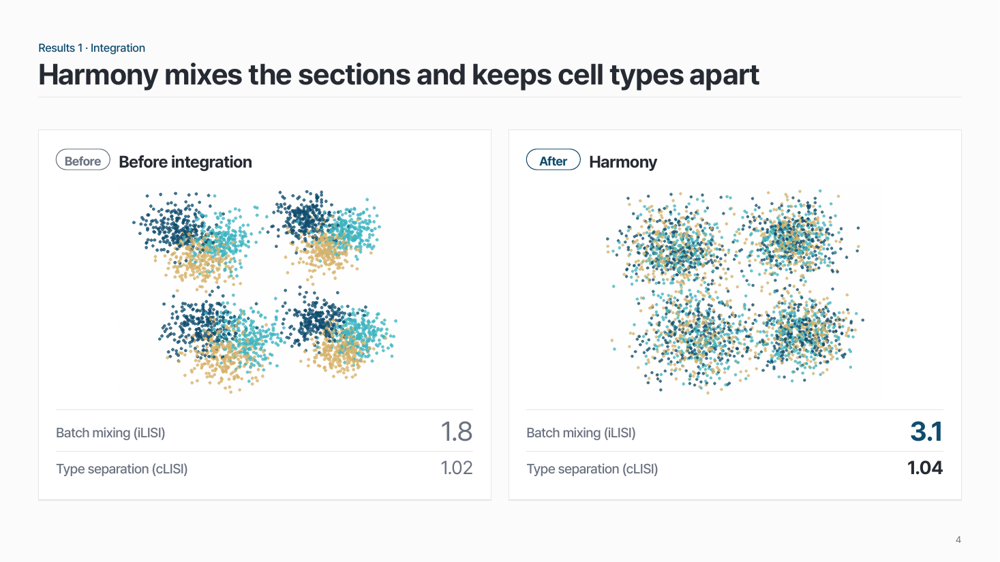
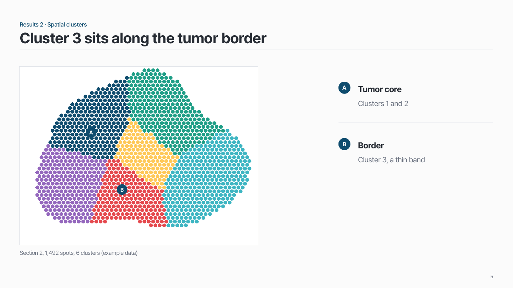
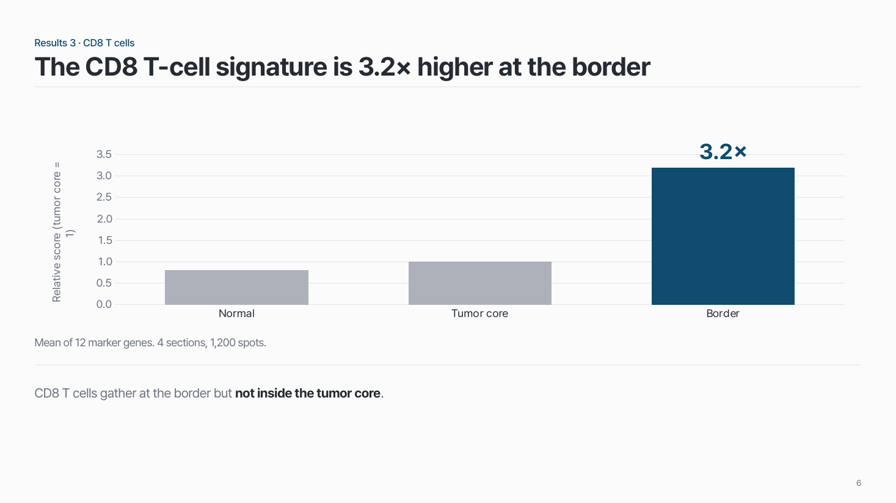
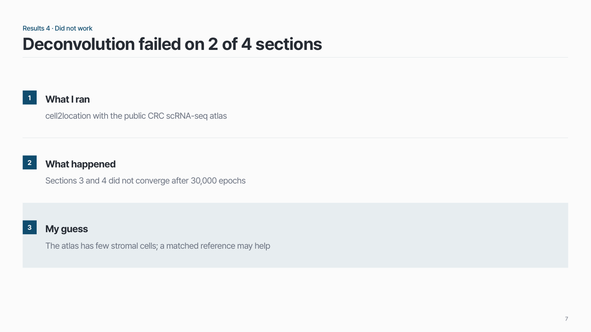
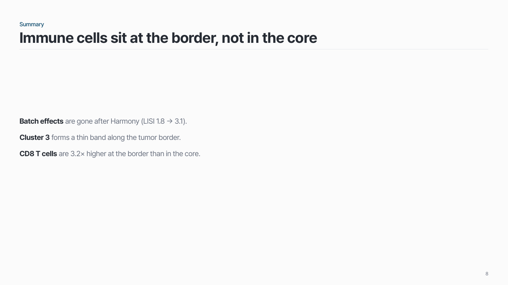
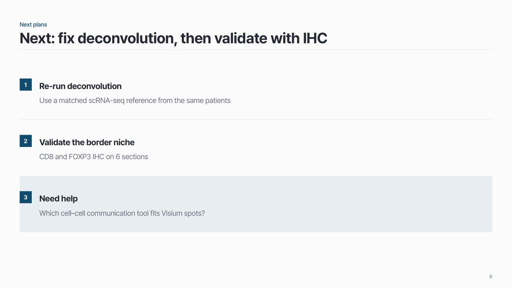

홈 › 자리별 덱 › 랩미팅 Progress report
랩미팅 Progress report
매주 랩미팅에서 지난 결과를 보고하고 도움을 받아요
15분 안팎 12–15장 매주
이런 자리
연구실 사람들이 내 연구를 이어서 들어요. 목적은 피드백을 받는 것이라, 잘 된 결과만큼 잘 안 된 분석도 보여 줘요.
- 흐름: Background → In the previous → Results → Summary → Next plans
- Background 는 첫 발표 때 제대로, 두 번째부터는 1–2장으로 짧게.
- Results 는 분석마다 왜 했는지 · 어떤 원리인지 → 결과 → 한 줄 요약.
팁
- 슬라이드 제목은 그 장의 결론 문장 (✗ "Result 2" → ✓ "Inflammatory genes are up in patients").
- 지난번 받은 피드백을 기록해 두면 다음 발표의 In the previous 가 돼요.
- 그림을 크게, 글은 줄이고 설명은 말로. 할 말은 발표자 노트에.
- 1장 ≈ 1분, 데이터 장은 1.5–2분. 넘치는 결과는 맨 뒤 보충 장으로.
- 막힌 지점과 결정받고 싶은 질문은 Next plans 에 따로 적어요.
덱 흐름
표지 → Background → In the previous → Results → Summary → Next plans
1
표지
날짜와 발표자. 매주 같은 틀이면 충분해요.

2
Background
첫 발표는 2–3장으로 자세히, 두 번째부터는 이 한 장으로 짧게.

3
In the previous
지난번 Next plans 와 받은 피드백 → 이번에 한 일.

4
Results
분석마다 왜 했는지 · 어떤 원리인지 → 결과 → 한 줄 요약. 잘 안 된 분석도 보여 주고 도움을 받아요.




5
Summary
이번에 알게 된 것 3줄 이내.

6
Next plans
결과를 근거로 한 다음 단계, 그리고 도움이 필요한 것.
